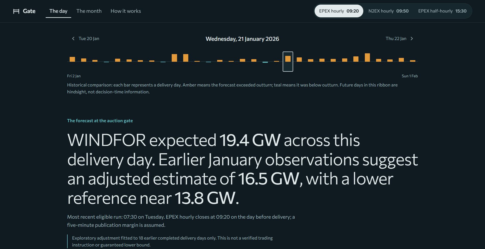

Decision-time day view
Compare the forecast available at the selected auction gate with a trial historical adjustment. Reveal actual generation separately, inspect each hour and export the selected day as CSV.
Case study · Python & data analytics · 2026
A historical day-ahead wind intelligence pilot that reconstructs what UK electricity buyers could have known before an auction. Real forecast history, measured error, and an exploratory adjustment evaluated without peeking into future outcomes.

Real application screenshot. The adjusted estimate is exploratory, and observed generation is shown separately from information available at the original decision.
The problem
Day-ahead procurement decisions happen before the electricity is generated. Wind forecasts are revised repeatedly, so comparing the latest available forecast with the final result can leak information that was not yet known when the decision had to be made. Gate asks a narrower and more defensible question: what did the published wind forecast say before each auction cutoff?
What I built
Compare the forecast available at the selected auction gate with a trial historical adjustment. Reveal actual generation separately, inspect each hour and export the selected day as CSV.
Inspect forecast revisions and distinguish values published before the cutoff from revisions that arrived too late.
Explore forecast errors by hour, wind-level band and lead time. Compare the original forecast with exploratory adjustments on later, chronologically evaluated days.
Document source resolution, timing assumptions, data alignment, validation rules and limitations in the interface and repository.
Data & methodology
Gate works from real Elexon BMRS datasets: WINDFOR publishes forecasts for native hourly targets, while FUELHH WIND reports half-hourly observed generation. The pilot covers purchase-decision dates from 1–31 January 2026 and the corresponding delivery days from 2 January–1 February.
Keep every forecast publication timestamp. For each hourly target, select only the latest forecast published no later than the auction closing time minus an assumed five-minute margin.
Compare hourly forecast targets with the observation for the half-hour starting on the hour. Do not manufacture missing half-hour forecasts.
The experimental adjustment groups forecasts into three wind-level bands and learns their historical signed differences using complete days on or before delivery day D−2. It requires at least seven earlier days before being shown.
Measured findings
In the January snapshot, the published WINDFOR series was higher than the FUELHH wind outturn in approximately 85% of the matched hourly comparisons. The gap was larger at higher forecast wind levels. On the same held-out, walk-forward evaluation set of 552 hours across 23 days, the exploratory wind-band adjustment reduced mean absolute difference.
Published forecast mean absolute difference on the walk-forward evaluation set.
Wind-band-adjusted mean absolute difference on the same historical evaluation set.
Observed hours above the exploratory lower reference, below the study's 90% target.
These numbers are reproducible findings from a short historical pilot, not an operational performance guarantee or advice on how much electricity to buy.
Engineering choices
Publication cutoffs and timezone-aware timestamps prevent later forecasts from slipping into earlier decisions.
Snapshot metadata, validation scripts and source-resolution handling make source assumptions inspectable.
FastAPI serves read-only analysis; React and TypeScript present day and month views, forecast history and CSV exports.
What the results do not prove
WINDFOR and FUELHH may represent different wind-generation populations. Some apparent forecast error could reflect curtailment or differences in coverage. The retrospective October 2026 data snapshot may include actual-value revisions that were not available during January, and one month's historical evaluation is insufficient to promise future accuracy. Gate also has no demand forecasts, power prices or existing client positions, so it cannot recommend a purchase quantity.
Proof & further reading
The GitHub repository includes source data and metadata, the ingestion and audit scripts, backend tests, the frontend implementation and a reproducible README. The demo shows the application flow and methodology.